Токио · Дзингумаэ · ресторан
«Нода» в Дзингумаэ: японская кухня повара, который начинал с французской
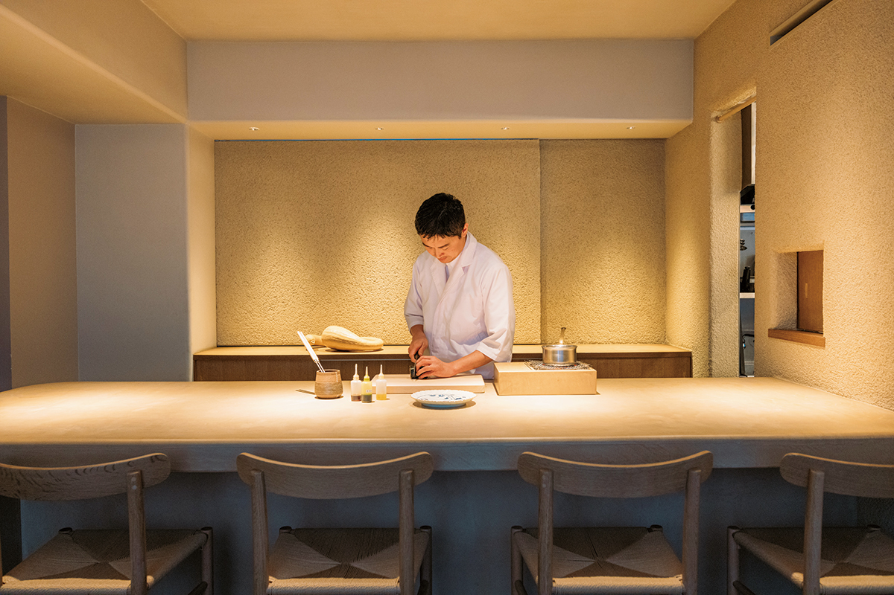
Шеф Юки Нода учился французской кухне, тринадцать лет держал свой ресторан в Дзингумаэ, а потом решил всерьёз заняться японской. В ресторане «Нода» за знакомыми японскими названиями блюд почти всегда прячется неожиданность.
Шеф
От бистро к японской кухне
Юки Нода родом из префектуры Сидзуока. Он учился в известных французских ресторанах и в 28 лет открыл собственный, kiki harajuku, в Дзингумаэ. Тринадцать лет он искал там свой путь, а в октябре 2023 года снял старую вывеску, перестроил зал и открыл ресторан заново под своей фамилией: «Нода».
«Я учился французской кухне, но, когда у меня появился свой ресторан, понял, что повторять здесь всё, чему меня учили, нет смысла. Бистро с блюдами по меню превратилось в курс, в нём появлялось всё больше японского, и в какой-то момент мне захотелось один раз как следует выучить японскую кухню»
шеф Юки Нода
Меню напечатано на японской бумаге васи: одиннадцать блюд, и их названия записаны латиницей, как японские слова: shiraae, tatsutaage, shirako ponzu. Шеф хочет беречь традиции японской кухни и при этом менять блюда от сезона к сезону, и меню должно показывать и то, и другое.
Учёба
Бульон, травы и рыба
Примерно в 2021 году шеф по выходным стажировался в японском ресторане «Сигэёси». Там он освоил основы, например как варить бульон даси, но научился и другому: спокойно впускать в кухню новое. В «Сигэёси» варили и консоме, а в блюдах угадывались мотивы китайской кухни.
«Я пробовал у себя то, что узнал в "Сигэёси", курс становился всё длиннее, в нём появлялось всё больше блюд, и, думаю, тогда и начал складываться мой собственный стиль»
шеф Юки Нода
В то же время кухню шефа сильно изменило знакомство с фермой Yoshino Herb Farm в префектуре Тиба. Там выращивают около 300 видов овощей и трав, от редких европейских сортов до старых японских. Увидев их на грядках, шеф везёт их в ресторан и придумывает, как превратить в блюдо. По его словам, это непросто, но очень закаляет.
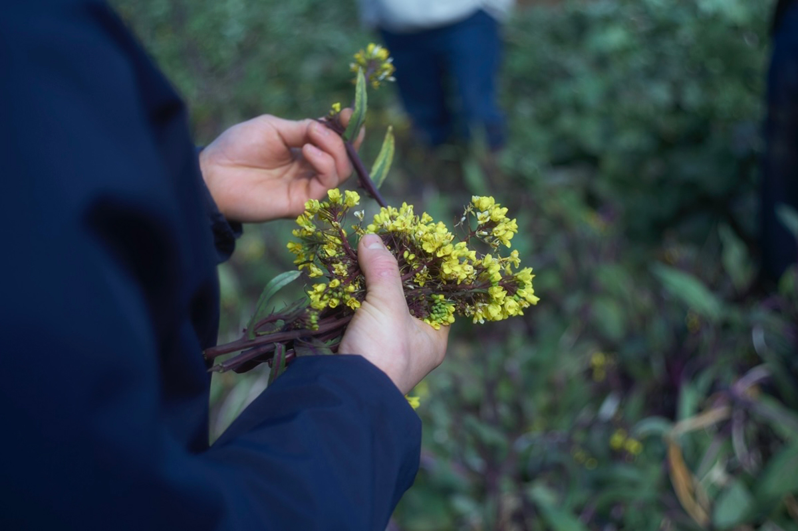
Рыбу шеф тоже выбирает тщательно. Часть привозят из рыбной лавки «Ояма» в Карацу на Кюсю, которая славится техникой синкэй-дзимэ, когда у рыбы тонкой проволокой разрушают спинной мозг, чтобы мясо дольше оставалось свежим. Остальное он сам покупает на рынке Тоёсу. Морского чёрта из Ёити на Хоккайдо используют целиком: лёгкое белое мясо идёт на тацутааге, жирную печень заворачивают в ролл вместе с бананом, а кости и кожу пускают на бульон.
На первый взгляд всё здесь японская кухня. Но овощи к тацутааге шеф тушит по французскому приёму этюве и для кислинки вместо белого вина берёт сок мандарина.
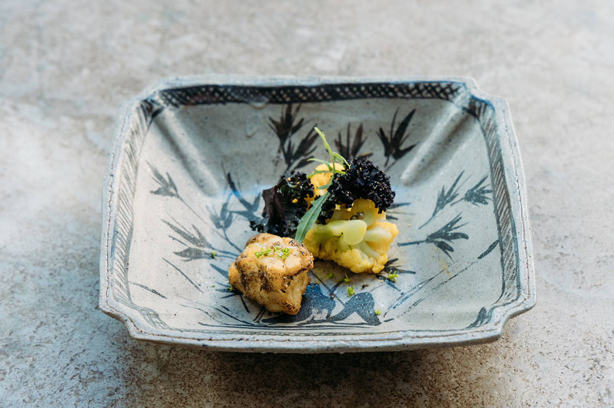
Фрукты
Сезон вместо приправы
Ещё одна черта кухни шефа Ноды в том, как он обращается с фруктами.
«Фрукты легко передают сезон, а их естественная сладость и кислота могут заменить приправы. Их можно продумывать вместе с десертом и напитками, и это очень интересно. Если я делаю напиток из киви, то жмых сбраживаю и пускаю в блюдо или заливаю уксусом, чтобы тот взял его аромат»
шеф Юки Нода
Блюдо «shiraae» оказалось совсем не таким, каким его ждёшь. Обычно сираэ это овощи в пюре из тофу. Здесь грушу соединили с моллюском и добавили тонкую плёнку из молока, похожую на юбу. Первый, самый ароматный отвар даси чувствуется в нужных местах, поэтому вкус остаётся японским, но аромат и мягкая сладость груши ложатся на молоко.
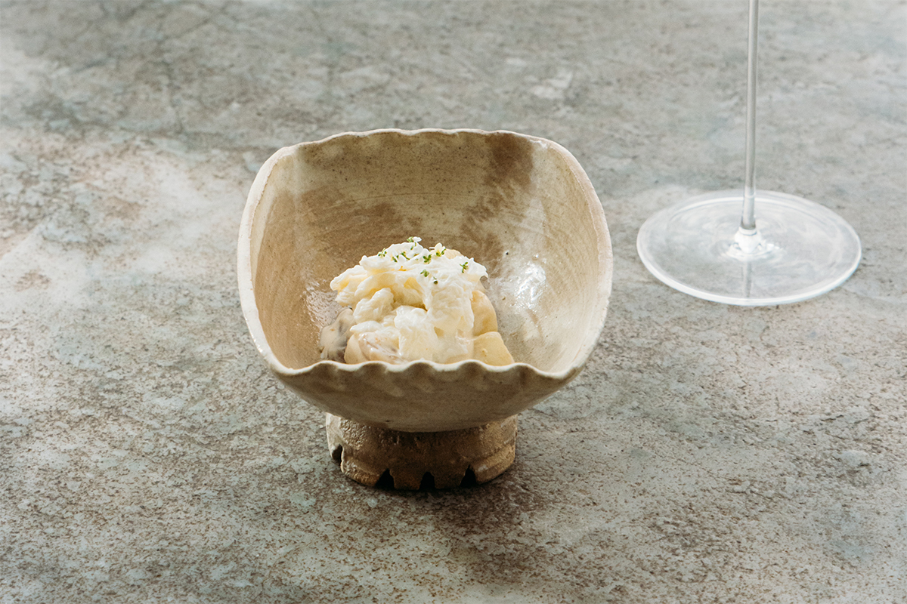
Больше всего удивляет сашими из куэ. Здесь всё началось с соуса: шеф смешал клубнику с рисовым солодом кодзи и солью и оставил настаиваться, и получилась жидкость, похожая на соевый соус с запахом клубники. К такому яркому соусу, решил он, нужна рыба с мягким вкусом, но выразительная и красивая по цвету, то есть куэ. Безалкогольный напиток к блюду сделан из клубники и фиолетовых цветков хризантемы, замаринованных в сладком уксусе, с газом. Клубника связывает рыбу и напиток.
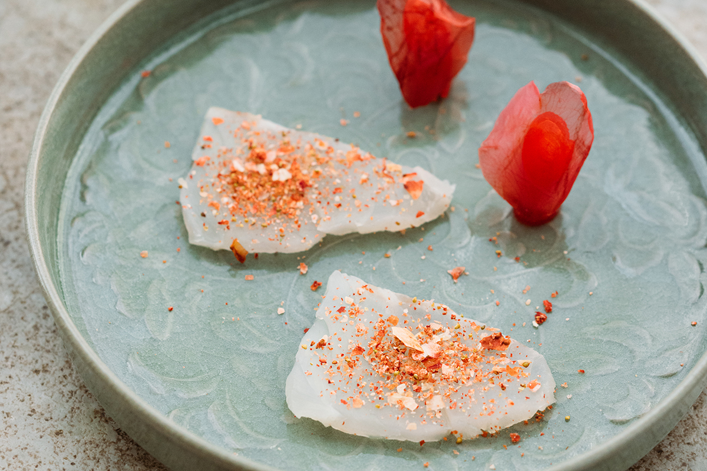
К еде подают и безалкогольное сопровождение. Шеф видит в нём большие возможности: напитки строят на чае и сезонных фруктах, добавляют брожение, придумывают по образу красного вина или мутного сакэ нигори. Из вина шеф выбирает натуральные вина Восточной Европы, есть также сакэ и сётю, которые идут к еде. В холодное время года любят сётю с горячей водой.
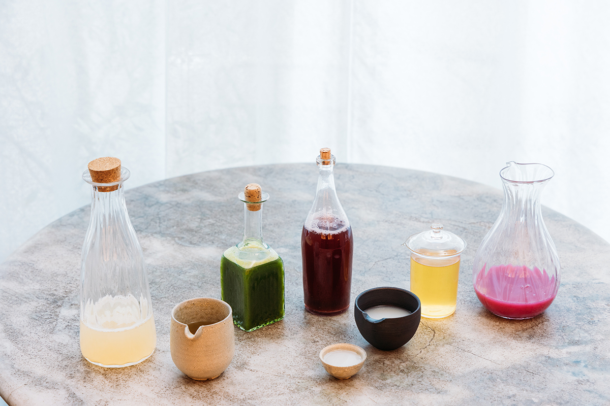
Дания
Опыт с острова Борнхольм
Пока ресторан был закрыт на перестройку, шеф работал на кухне ресторана Kadeau на датском острове Борнхольм. У этого известного ресторана свой огород, а продукты острова он превращает в гастрономические блюда.
«Там очень умело обращаются с продуктами, и даже блюда, где главное это овощи, получаются красивыми и вкусными. Северная культура брожения и сочетания с напитками тоже многое мне подсказали»
шеф Юки Нода
Этот опыт уже виден в блюдах и напитках. Стиль шефа выходит за рамки французской и японской кухни, и следить за ним по-настоящему интересно.
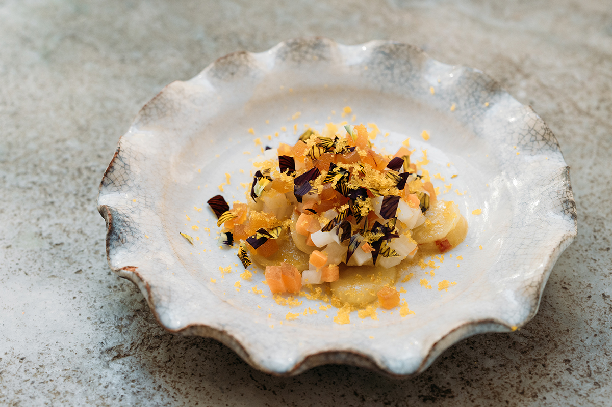
Курс
Шестнадцать блюд
В курсе больше десятка блюд, и их можно есть не спеша. Кроме названных, в 2024 году в меню были «shirako ponzu», молоки, припущенные в бульоне из комбу, со шпинатом и пеной из соуса киви, и «itokoni», пудинг из тыквы тромбетта со сладкой фасолью адзуки и спрятанным внутри морским ежом. В «kinpira» топинамбур готовили с чёрным трюфелем и запечённым на углях луком-пореем. «Yawatamaki» пришло из города Явата в префектуре Киото, известного корнем лопуха гобо: гобо заворачивают в угря и обжаривают с соусом из выдержанного жмыха сакэ и костей угря.
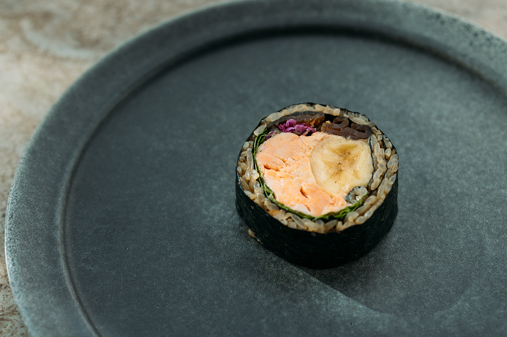
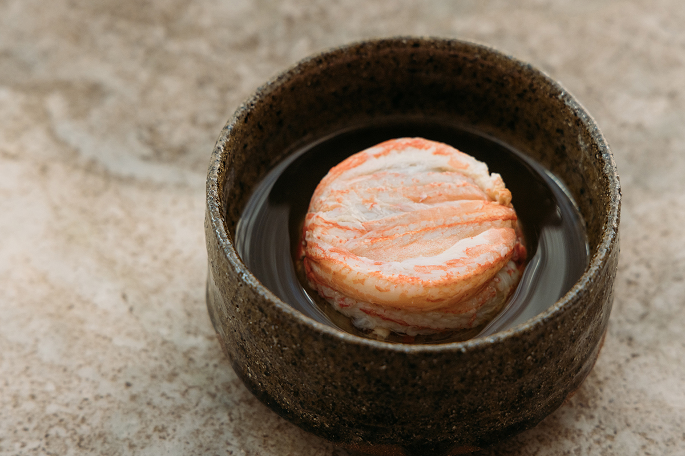
Сверх меню подают несколько маленьких «бонусов». Например, жареный хлеб с креветкой, в тесто которого вмешан панцирь креветки ботан-эби, или тако-яки из конфи осьминога с соусом из сушёных сардин ирико и чёрной икрой.
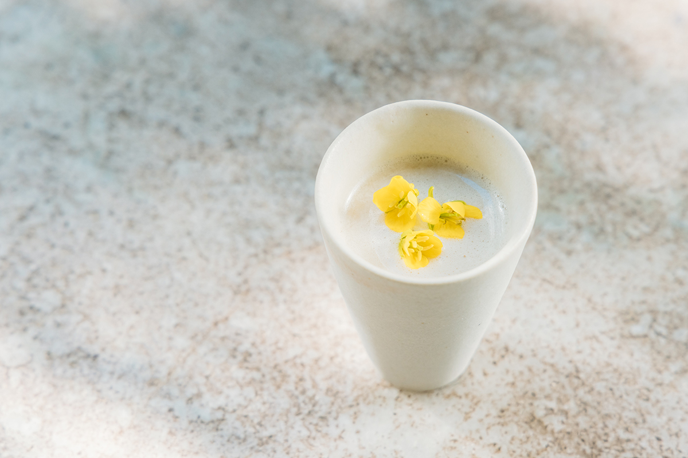
Десертов три. Один из них, «yubeshi», состоит из карамельного мороженого с мисо и юдзу, листа из отвара опавших листьев дерева кацура и засахаренных грецких орехов. Ещё есть ёкан из батата анно и белой фасоли и французская яблочная выпечка, переосмысленная по-своему: кислые яблоки сорта «Гренни Смит» томят в компоте с домашней сливовой настойкой умэсю.
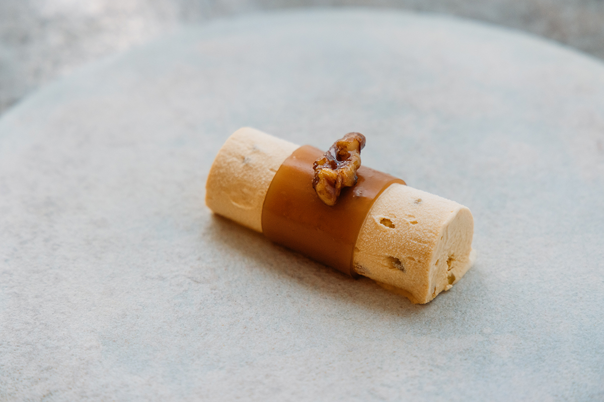
Тарелки и пиалы для блюд делают японские керамисты из Саги, Сиги, Киото и других мест. Вокруг шефа работает команда молодых поваров, которые вместе с ним постоянно ищут новые вкусы.
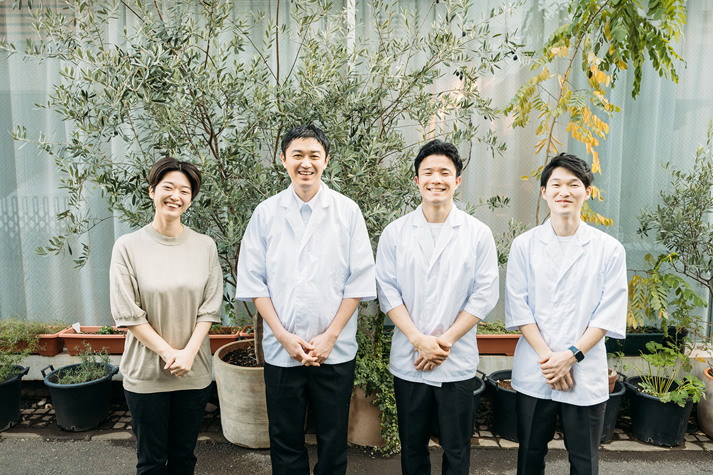
«Нода»
- Адрес
- Токио, Сибуя, Дзингумаэ, 6-9-9, здание «Авэниру Омотэсандо», 1-й этаж
- Телефон
- +81 70-3882-3150 (только по брони)
- Часы работы
- начало обеда в 12:30 (по субботам и ещё в несколько дней), начало ужина в 18:30
- Выходные
- воскресенье
- Цены / Вход
- обеденный курс 18 000 иен, ужин 22 000 иен (без налога и платы за обслуживание)
Фото: Майко Фукуи.